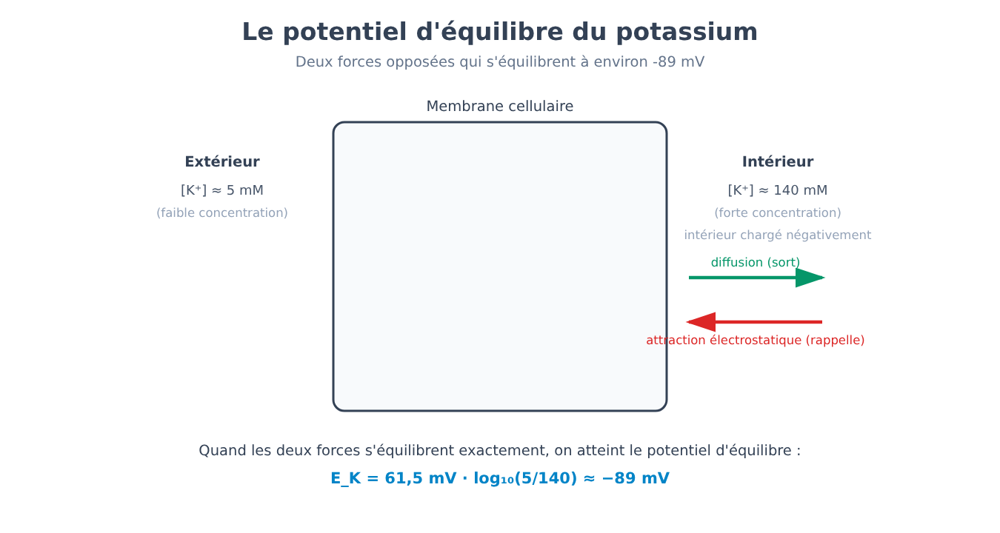
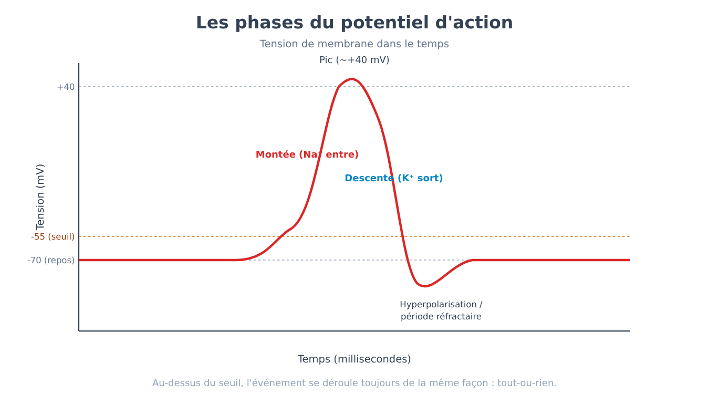
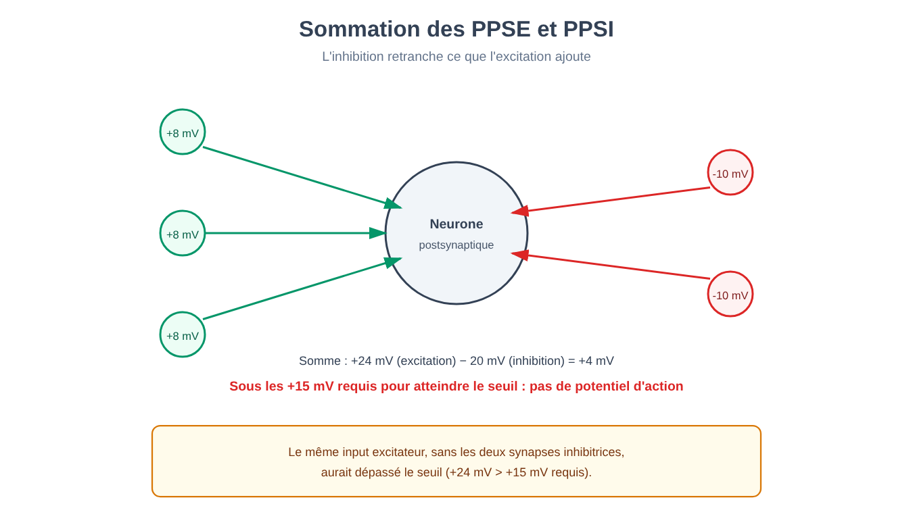
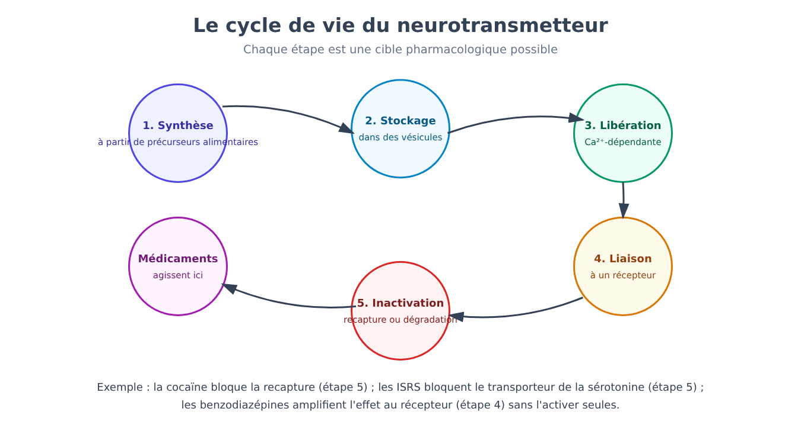
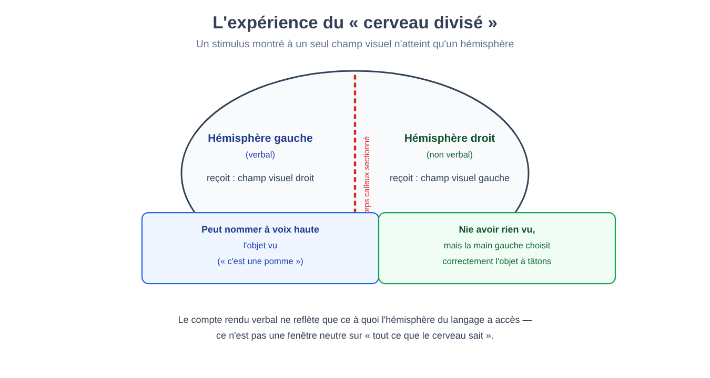
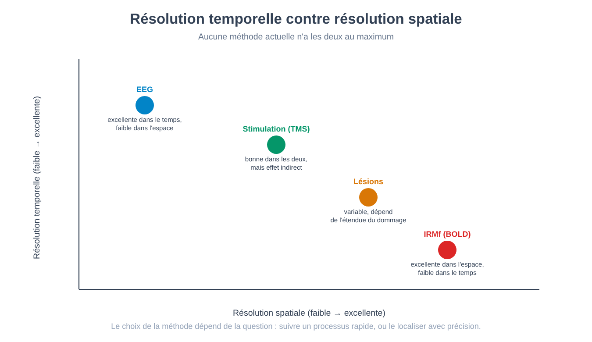
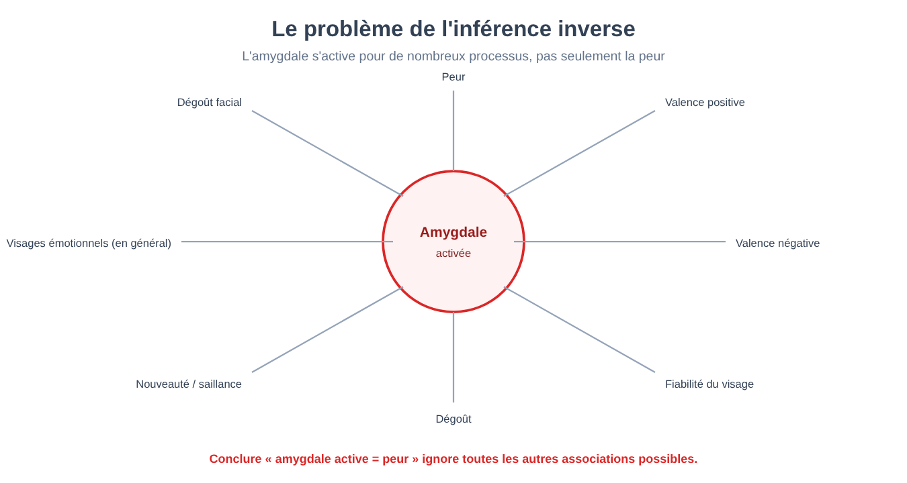
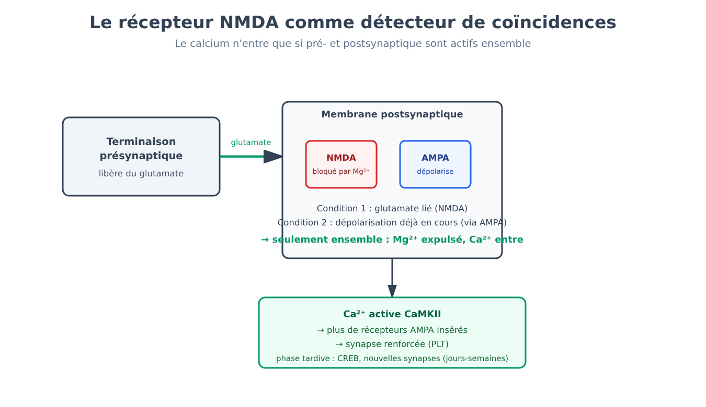
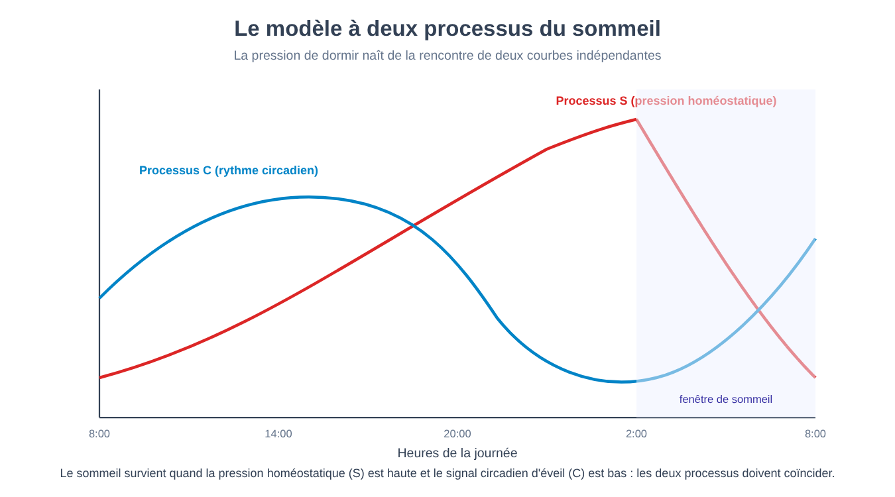
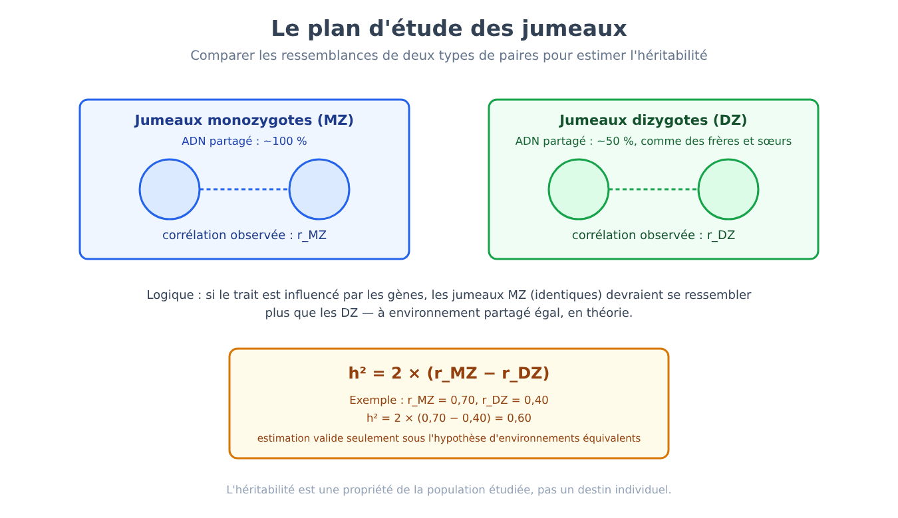

Partie IV. Le substrat : système nerveux et comportement
Chapitre 20 — Le neurone comme unité de signal
[EN DEUX MOTS]
Tout phénomène psychologique décrit jusqu'ici — un souvenir, une émotion, une décision — doit, à un certain niveau de description, être implémenté par des cellules qui échangent des signaux. Ce chapitre expose comment une seule cellule nerveuse construit un signal électrique à partir de différences de concentration ionique, pourquoi ce signal est tout-ou-rien, et avec quelle formule on calcule le point d'équilibre vers lequel chaque ion « pousse » la cellule.
Imagine que tu doives faire parvenir un message d'un bout à l'autre d'une pièce en utilisant seulement des portes qui s'ouvrent et se ferment, sans véritables fils électriques. C'est, en substance, le problème que chaque neurone résout continuellement : il ne transporte pas un signal électrique comme le ferait un câble de cuivre, où les électrons circulent librement sur toute la longueur. Il construit plutôt, point par point le long de sa membrane, un événement électrique qui se régénère de lui-même — et pour comprendre comment, il faut partir d'un fait qui semble à première vue un détail technique : à l'intérieur et à l'extérieur de la cellule, les concentrations de certains ions sont systématiquement différentes.
Des pompes comme batteries, des canaux comme interrupteurs
La membrane d'un neurone contient des pompes ioniques (ion pumps) : des protéines qui consomment de l'énergie (sous forme d'ATP) pour déplacer des ions contre leur gradient de concentration — davantage de potassium (K⁺) à l'intérieur, davantage de sodium (Na⁺), de chlore (Cl⁻) et de calcium (Ca²⁺) à l'extérieur. Le résultat est une cellule qui, au repos, contient beaucoup plus de K⁺ à l'intérieur qu'à l'extérieur, et beaucoup moins de Na⁺ à l'intérieur qu'à l'extérieur. Ces pompes fonctionnent comme des batteries chargées à l'avance : elles emmagasinent de l'énergie sous forme de gradient de concentration, prête à être libérée plus tard.
Les canaux ioniques (ion channels) sont l'interrupteur qui libère cette énergie emmagasinée : lorsqu'ils s'ouvrent, ils laissent un ion spécifique se déplacer selon son propre gradient — de la zone de concentration la plus élevée vers la plus basse — en produisant un courant électrique à travers la membrane. Un canal qui s'ouvre pour le K⁺ laisse le potassium sortir (emportant des charges positives hors de la cellule, et rendant donc l'intérieur plus négatif) ; un canal qui s'ouvre pour le Na⁺ laisse le sodium entrer (apportant des charges positives à l'intérieur, et rendant l'intérieur plus positif).
Le potentiel de repos et le potentiel d'équilibre
Au repos, certains canaux pour le K⁺ — appelés canaux de fuite (leak channels) — restent toujours partiellement ouverts. Le K⁺ tend donc à sortir de la cellule en suivant son propre gradient de concentration. Mais à mesure que le K⁺ positif sort, l'intérieur de la cellule devient de plus en plus négatif, et cette négativité croissante commence à « rappeler » le K⁺ positif vers l'intérieur par attraction électrostatique. À un certain moment, la poussée vers la sortie (diffusion, due à la concentration) et la poussée vers l'entrée (attraction électrostatique, due à la charge) s'équilibrent exactement. La tension électrique à laquelle cet équilibre s'établit pour un ion donné s'appelle potentiel d'équilibre (equilibrium potential) de cet ion, et c'est la valeur vers laquelle cet ion, à lui seul, « pousserait » la membrane s'il était le seul à pouvoir la traverser.
[FORMULE]
L'équation de Nernst permet de calculer le potentiel d'équilibre d'un ion donné à partir de ses concentrations à l'intérieur et à l'extérieur de la cellule :
E_ione = (RT / zF) · ln([ione]fuori / [ione]dentro)
Où :
• E_ione est le potentiel d'équilibre de l'ion, exprimé en volts (ou en millivolts).
• R est la constante universelle des gaz (8,314 J/(mol·K)) — la quantité d'énergie thermique disponible par mole de substance à une température donnée.
• T est la température absolue en kelvins (pour un organisme à 37 °C, T = 310 K).
• z est la valence de l'ion (sa charge électrique : +1 pour K⁺ et Na⁺, +2 pour Ca²⁺, −1 pour Cl⁻).
• F est la constante de Faraday (96 485 coulombs/mol) — la charge électrique transportée par une mole de charges élémentaires.
• ln est le logarithme naturel.
• [ione]fuori et [ione]dentro sont les concentrations de l'ion à l'extérieur et à l'intérieur de la cellule.
À température corporelle, le terme RT/F, converti en millivolts et avec le logarithme naturel réécrit en logarithme en base 10 (en multipliant par 2,303), se simplifie en une constante pratique d'environ 61,5 mV pour un ion monovalent (z = 1). La formule devient donc, pour un usage rapide :
E_ione ≈ (61,5 mV / z) · log₁₀([ione]fuori / [ione]dentro)
Exemple de calcul — le potentiel d'équilibre du potassium. Une valeur typique pour un neurone de mammifère est [K⁺]dentro ≈ 140 millimolaires (mM) et [K⁺]fuori ≈ 5 mM, avec z = +1 (le potassium a une charge unique positive). En substituant :
E_K = 61,5 mV · log₁₀(5 / 140) = 61,5 mV · log₁₀(0,0357) = 61,5 mV · (−1,447) ≈ −89 mV
Ce nombre — proche des valeurs de potentiel de repos effectivement mesurées dans les neurones réels, typiquement entre −65 et −70 mV — montre pourquoi le potentiel de repos est dominé par le potassium : si les canaux de fuite pour le K⁺ étaient les seuls canaux ouverts au repos, la cellule se stabiliserait presque exactement sur cette valeur. Le fait que le potentiel de repos réel (environ −70 mV) soit légèrement moins négatif que −89 mV indique qu'une petite quantité de Na⁺ filtre aussi continuellement dans la cellule, déplaçant le bilan vers des valeurs un peu plus positives — ce qui est cohérent avec le fait que le potentiel d'équilibre du Na⁺, calculé avec ses concentrations typiques ([Na⁺]fuori ≈ 145 mM, [Na⁺]dentro ≈ 15 mM), est positif : E_Na = 61,5 mV · log₁₀(145/15) ≈ +61 mV — très éloigné du potentiel de repos, et précisément pour cette raison capable de produire un changement spectaculaire lorsque les canaux pour le Na⁺ s'ouvrent en masse, comme dans le paragraphe suivant.

Le potentiel d'action : un événement tout-ou-rien
Lorsque la tension de la membrane, sous l'effet de signaux entrants (décrits dans le prochain chapitre), atteint un seuil (threshold) — typiquement autour de −55 mV — se déclenche un événement complètement différent de tout ce qui s'est produit jusque-là : le potentiel d'action (action potential). La séquence est la suivante.
Les canaux sodiques voltage-dépendants (voltage-gated sodium channels) — des canaux qui s'ouvrent non pas en réponse à une substance chimique, mais en réponse au voltage même de la membrane — s'ouvrent en masse. Le Na⁺, poussé à la fois par son propre gradient de concentration et désormais par l'attraction électrostatique (l'intérieur est négatif, le sodium est positif), se déverse dans la cellule. Cela produit un mécanisme de rétroaction positive : plus il entre de Na⁺, plus la membrane se dépolarise (devient positive) ; plus elle se dépolarise, plus des canaux sodiques s'ouvrent. C'est précisément cette rétroaction qui fait du potentiel d'action un événement tout-ou-rien (all-or-none) : une fois le seuil franchi, l'événement se poursuit jusqu'à son maximum, indépendamment du fait que le stimulus initial ait été à peine au-dessus ou très au-dessus du seuil — il n'existe pas de potentiel d'action « à moitié ».
La phase ascendante s'arrête lorsque les canaux sodiques s'inactivent (un mécanisme distinct de la fermeture : le canal cesse de répondre même si le voltage resterait favorable) et que, simultanément, s'ouvrent les canaux potassiques voltage-dépendants, plus lents à s'activer. Le K⁺ sort, ramenant la membrane vers des valeurs négatives (phase descendante) et souvent au-delà du potentiel de repos d'origine, dans une brève période réfractaire pendant laquelle un nouveau potentiel d'action est plus difficile, voire impossible, à générer. Cette période réfractaire empêche le signal de revenir sur lui-même, garantissant qu'il se propage dans une seule direction le long de l'axone.

[ATTENTION AU SAUT LOGIQUE]
Il est facile d'imaginer le potentiel d'action comme un courant électrique qui « circule » le long de l'axone, de la même façon que l'électricité circule dans un câble. Il n'en est rien : le potentiel d'action généré en un point de la membrane dépolarise légèrement le tronçon de membrane adjacent, le portant à son tour au-dessus du seuil et y déclenchant un potentiel d'action entièrement nouveau, de même amplitude que le premier. Le signal ne se déplace pas : il se régénère, point après point, tout le long du trajet — raison pour laquelle il ne s'affaiblit pas avec la distance, à la différence d'un signal électrique passif qui s'atténue progressivement.
La vitesse de conduction et la myéline
Cette régénération point par point a un coût : elle est plus lente qu'un courant électrique passif. De nombreux axones sont enveloppés d'un isolant, la myéline (myelin), produite par des cellules gliales spécialisées, qui réduit la déperdition de courant à travers la membrane dans les tronçons isolés. Le potentiel d'action, au lieu de se régénérer de façon continue, « saute » d'une interruption de la myéline à l'autre — un mécanisme appelé conduction saltatoire (saltatory conduction) — augmentant sensiblement la vitesse de transmission sans qu'il soit nécessaire d'augmenter le diamètre de l'axone, qui est l'autre variable influençant la vitesse (les axones plus larges offrent moins de résistance).
[LE PLAN DE L'EXPÉRIENCE]
Le problème. Jusqu'au milieu du XXe siècle, il n'existait aucun moyen de mesurer directement ce qui changeait électriquement à travers la membrane d'un seul neurone pendant un potentiel d'action : les instruments de l'époque n'étaient ni assez précis ni assez rapides.
La solution technique. Les chercheurs (Hodgkin et Huxley, au début des années 1950, qui utilisèrent une technique mise au point par Cole et Marmont à la fin des années 1940) retinrent l'axone géant du calmar — large jusqu'à un millimètre de diamètre, énormément plus gros qu'un axone de mammifère — comme modèle expérimental : assez grand pour qu'on puisse y insérer une électrode et mesurer directement la tension à travers la membrane. Avec la technique du voltage clamp (pince de potentiel), le potentiel de membrane est maintenu artificiellement fixe à une valeur choisie par l'expérimentateur, tandis qu'on mesure le courant que la cellule génère pour s'opposer à cette valeur imposée — une mesure indirecte, mais précise, de quels canaux ioniques s'ouvrent et dans quelle séquence.
Le résultat. En imposant différents niveaux de voltage et en mesurant les courants obtenus, il fut possible de séparer pour la première fois la contribution du Na⁺ (courant rapide, vers l'intérieur) de celle du K⁺ (courant plus lent, vers l'extérieur), et de décrire mathématiquement toute la séquence du potentiel d'action — ouverture, inactivation, période réfractaire — avec des équations capables de prévoir correctement la forme et la vitesse du signal observé.
Pourquoi cela compte encore aujourd'hui. Le modèle construit avec cette technique reste, pour l'essentiel, le modèle standard par lequel on décrit le potentiel d'action dans n'importe quel neurone, humain compris : un cas où un organisme choisi par pure commodité technique (un calmar, non un mammifère) a révélé un mécanisme partagé par des espèces énormément différentes.
[IDÉE REÇUE]
Penser le système nerveux comme une installation électrique — des signaux qui « courent » le long de fils, par analogie avec le courant électrique domestique — est une image utile mais trompeuse sur au moins deux points : premièrement, le signal n'est pas un courant passif mais un événement chimico-électrique qui se régénère ; deuxièmement, sans les pompes ioniques qui chargent continuellement les gradients de concentration (un processus lent, qui consomme de l'énergie métabolique), il n'y aurait aucun signal à propager, aussi sophistiqué que soit le reste du circuit. Les pompes ne sont pas un détail d'entretien : elles sont la condition préalable de tout signal.
[MINI-CHRONOLOGIE]
L'hypothèse selon laquelle la membrane cellulaire, sélectivement perméable aux ions, serait le siège du signal électrique nerveux remonte au début du XXe siècle. La technique du voltage clamp, mise au point par Cole et Marmont à la fin des années 1940, fut utilisée par Hodgkin et Huxley pour la caractérisation complète des courants ioniques du potentiel d'action sur l'axone géant de calmar, publiée au début des années 1950. Le principe s'est ensuite révélé conservé, avec des variations de détail, dans tout le règne animal — des drosophiles aux mammifères.
[L'ESSENTIEL DU CHAPITRE]
• Les pompes ioniques construisent des gradients de concentration en consommant de l'énergie ; les canaux ioniques les exploitent en laissant circuler des courants vers le potentiel d'équilibre de chaque ion.
• Le potentiel d'équilibre d'un ion se calcule avec l'équation de Nernst ; pour le K⁺, avec des concentrations typiques, il est d'environ −89 mV, proche du potentiel de repos réel (environ −70 mV), parce que le potassium en est le principal responsable.
• Le potentiel d'action est un événement tout-ou-rien : au-dessus du seuil, l'ouverture en masse des canaux sodiques déclenche une rétroaction positive indépendante de l'intensité du stimulus initial.
• La conduction saltatoire le long de tronçons myélinisés augmente la vitesse de transmission sans exiger des axones plus larges.
• Le modèle standard du potentiel d'action fut construit avec la technique du voltage clamp sur l'axone géant de calmar, et s'est révélé généralisable à des espèces très différentes, l'être humain compris.
Chapitre 21 — La synapse
[EN DEUX MOTS]
Un potentiel d'action qui atteint l'extrémité d'un axone doit traverser un espace physique qui le sépare du neurone suivant : la synapse. Ce chapitre expose comment un signal électrique se transforme en signal chimique puis de nouveau en signal électrique, pourquoi la plupart des synapses ne transmettent pas un « oui » ou un « non » mais une contribution graduelle qui s'ajoute à d'autres contributions, et pourquoi l'inhibition est, dans ce bilan, aussi importante que l'excitation.
Du signal électrique au signal chimique et retour
À la terminaison d'un axone, le potentiel d'action entrant ouvre des canaux calciques voltage-dépendants. Le Ca²⁺ qui entre déclenche la fusion de petites vésicules contenant du neurotransmetteur (neurotransmitter) avec la membrane présynaptique, libérant son contenu dans l'espace synaptique — un processus appelé exocytose (exocytosis). Le neurotransmetteur diffuse à travers cet espace (large d'environ vingt nanomètres) et se lie à des récepteurs (receptors) spécifiques situés sur la membrane de la cellule suivante (postsynaptique).
Cette liaison ouvre des canaux ioniques sur la membrane postsynaptique, produisant un potentiel postsynaptique (postsynaptic potential) — une petite variation locale et graduelle du voltage, très différente du potentiel d'action tout-ou-rien du chapitre précédent. Si le canal ouvert laisse entrer des charges positives (typiquement Na⁺ ou Ca²⁺), le potentiel postsynaptique est excitateur (EPSP, excitatory postsynaptic potential) : il rapproche la cellule du seuil. Si le canal laisse entrer des charges négatives (typiquement Cl⁻) ou sortir des charges positives, le potentiel postsynaptique est inhibiteur (IPSP, inhibitory postsynaptic potential) : il éloigne la cellule du seuil.
Le neurotransmetteur, une fois lié, est ensuite retiré de l'espace synaptique — par recapture (reuptake) de la part du neurone qui l'a libéré, ou par dégradation enzymatique — afin que le signal ne reste pas actif indéfiniment. Ce parcours tout entier — synthèse, stockage dans des vésicules, libération calcium-dépendante, liaison au récepteur, inactivation — est, comme nous le verrons au prochain chapitre, la carte complète des points sur lesquels un médicament psychoactif peut intervenir.
Sommation : pourquoi la cellule ne répond pas à une seule impulsion
Un EPSP isolé est presque toujours trop petit, à lui seul, pour amener la cellule postsynaptique au seuil du potentiel d'action. Chaque neurone reçoit en revanche des milliers de synapses simultanément, certaines excitatrices et d'autres inhibitrices, et la cellule « décide » de générer ou non un potentiel d'action en additionnant algébriquement toutes ces contributions à un moment donné et en un point donné — un processus appelé sommation (summation), qui peut être spatiale (entrées simultanées provenant de synapses différentes) ou temporelle (entrées rapprochées dans le temps provenant de la même synapse, qui se superposent avant de s'épuiser).
[CHIFFRES]
Un exemple numérique simplifié, purement illustratif, aide à voir le principe à l'œuvre. Suppose que le potentiel de repos d'un neurone soit de −70 mV et que le seuil soit de −55 mV ; il faut donc un changement net de +15 mV pour générer un potentiel d'action. Si trois synapses excitatrices s'activent presque simultanément, chacune produisant un EPSP de +8 mV, leur contribution additionnée est de +24 mV — suffisante, à elle seule, pour franchir le seuil. Mais si, au même instant, deux synapses inhibitrices s'activent aussi, chacune produisant un IPSP de −10 mV, la contribution inhibitrice retranche 20 mV : le total net est +24 − 20 = +4 mV, bien en dessous des +15 mV nécessaires. La même entrée excitatrice, en présence d'une inhibition suffisante, ne produit aucun potentiel d'action. Cet exemple, bien que simplifié par rapport à la réalité biophysique (où la position des synapses sur le dendrite, leur distance au point de déclenchement et leur timing exact comptent autant que leur nombre), montre pourquoi l'inhibition n'est pas un simple « moins » par rapport à l'excitation, mais une composante du calcul tout aussi déterminante.

Ionotrope contre métabotrope
Tous les récepteurs ne fonctionnent pas de la même manière. Les récepteurs ionotropes (ionotropic receptors) sont eux-mêmes des canaux ioniques : la liaison du neurotransmetteur ouvre directement le canal, produisant un effet rapide (de l'ordre de la milliseconde) et direct. Les récepteurs métabotropes (metabotropic receptors, souvent couplés aux protéines G) ne sont pas des canaux : la liaison du neurotransmetteur active une cascade de seconds messagers à l'intérieur de la cellule, qui peut à son tour ouvrir des canaux situés ailleurs, modifier l'expression génique, ou produire des effets plus lents (secondes ou minutes) mais souvent plus durables et plus largement distribués dans la cellule. La même substance chimique peut donc produire des effets très différents selon le type de récepteur qu'elle rencontre — un point qui redeviendra central au prochain chapitre, quand la même question se posera pour des médicaments entiers.
Il existe une exception à tout ce mécanisme chimique : la synapse électrique (electrical synapse), dans laquelle deux cellules sont reliées directement par des canaux protéiques appelés connexons (connexons), qui permettent au courant ionique de passer physiquement d'une cellule à l'autre sans aucun intermédiaire chimique. Elle est plus rapide que la synapse chimique mais aussi plus rigide : elle ne permet pas l'amplification, l'inhibition ou la plasticité que la synapse chimique rend possibles, et c'est pourquoi elle reste relativement rare dans le système nerveux des mammifères adultes, plus répandue dans des circuits qui exigent une synchronisation immédiate entre de nombreuses cellules.
[LE PLAN DE L'EXPÉRIENCE]
Le problème. Au début du XXe siècle, on ne savait pas clairement si la transmission entre un nerf et un organe cible (par exemple le cœur) était un phénomène purement électrique — le courant qui « saute » directement d'une cellule à l'autre — ou si elle impliquait la libération d'une substance chimique intermédiaire.
Le plan. Deux cœurs de grenouille isolés furent maintenus en fonctionnement dans deux récipients séparés, chacun baigné de son propre liquide physiologique, mais reliés de façon que le liquide du premier cœur puisse être transféré au second. Le nerf vague du premier cœur — qui en ralentit le battement lorsqu'il est stimulé — fut stimulé électriquement, et le battement du premier cœur ralentit comme prévu. Le liquide qui baignait ce premier cœur fut alors transféré dans le second récipient, sans aucune connexion électrique ou nerveuse directe entre les deux cœurs.
Le résultat. Le second cœur aussi, isolé et jamais stimulé directement, ralentit son battement dès qu'il reçut le liquide du premier. La seule explication compatible était que la stimulation du nerf vague avait libéré, dans le liquide, une substance chimique capable à elle seule de produire l'effet — baptisée à l'époque « substance vagale » puis identifiée comme l'acétylcholine.
Pourquoi c'est une expérience fondatrice. Cette expérience (Loewi, 1921) démontra, avec un plan simple et concluant, que la communication entre le système nerveux et l'organe cible peut être chimique et pas seulement électrique — la première démonstration expérimentale de l'existence d'un neurotransmetteur, à la base de tout le chapitre suivant sur les neurotransmetteurs et les médicaments.
[QUESTION CONTROVERSÉE]
Le raccourci conceptuel selon lequel l'excitation « allume » les circuits et l'inhibition les « éteint », comme si l'inhibition était une fonction secondaire ou de sécurité, est répandu. La recherche sur l'équilibre dit excitation/inhibition (E/I) montre au contraire que l'inhibition est constitutive du calcul lui-même : elle définit quels signaux passent, synchronise l'activité de populations de neurones en rythmes fonctionnellement pertinents, et son altération (plus qu'un simple excès d'excitation) est impliquée dans des affections cliniques hétérogènes, de l'épilepsie à certains troubles du développement. Traiter l'inhibition comme un simple frein, plutôt que comme un ingrédient actif du signal, sous-estime la quantité de travail computationnel que le réseau nerveux accomplit en soustrayant, et pas seulement en additionnant.
[L'ESSENTIEL DU CHAPITRE]
• À la synapse chimique, le signal électrique se convertit en signal chimique (neurotransmetteur libéré) puis de nouveau en signal électrique (potentiel postsynaptique) dans la cellule suivante.
• L'expérience des deux cœurs de grenouille démontra la première que cette transmission peut être chimique, et pas seulement électrique.
• Les potentiels postsynaptiques sont gradués, non tout-ou-rien, et se somment spatialement et temporellement : un neurone « décide » sur la base du bilan net entre EPSP et IPSP.
• Les récepteurs ionotropes agissent en quelques millisecondes en ouvrant directement un canal ; les récepteurs métabotropes agissent plus lentement par des cascades de seconds messagers.
• L'inhibition n'est pas un simple frein : elle est une partie active du calcul qu'effectue tout réseau de neurones.
Chapitre 22 — Neurotransmetteurs et psychopharmacologie
[EN DEUX MOTS]
Le chapitre précédent a décrit le cycle de vie d'un neurotransmetteur en général : synthèse, stockage, libération, liaison, inactivation. Ce chapitre applique cette carte aux principaux systèmes de neurotransmetteurs connus et à la manière dont les médicaments psychoactifs interviennent sur chacune de ses étapes — et aborde directement pourquoi la formule « déséquilibre chimique », souvent utilisée pour expliquer la dépression au grand public, est une simplification que les données ne soutiennent pas dans sa forme la plus répandue.
Les principaux systèmes de neurotransmetteurs
Un petit nombre de familles de neurotransmetteurs met en œuvre la très grande majorité de la communication dans le système nerveux.
| Neurotransmetteur | Précurseur | Fonction prédominante dans ce livre |
|---|---|---|
| Glutamate | glutamine | Excitation rapide ; base de la plasticité synaptique (chapitre 25) |
| GABA | glutamate (via une enzyme dédiée) | Inhibition rapide ; cible des benzodiazépines |
| Dopamine | tyrosine | Récompense et motivation (chapitre 52) ; contrôle moteur |
| Noradrénaline | tyrosine, en aval de la dopamine | Arousal, réponse au stress |
| Sérotonine | tryptophane | Humeur ; cible des médicaments antidépresseurs les plus répandus |
| Acétylcholine | choline | Jonction neuromusculaire ; arousal cortical |
| Endocannabinoïdes | lipides membranaires | Signalisation rétrograde, produite à la demande, non stockée dans des vésicules |
Un point qui mérite d'être isolé : la fonction d'un neurotransmetteur n'est pas une propriété fixe de la molécule, mais dépend de la région cérébrale, du type de récepteur auquel il se lie et du circuit dans lequel il s'insère. La même dopamine qui, dans le circuit de la récompense, signale un écart entre résultat attendu et résultat obtenu (l'erreur de prédiction déjà rencontrée, avec une formule différente, dans le conditionnement classique du chapitre 15) est impliquée, dans un circuit moteur distinct, dans la fluidité du mouvement volontaire — dont l'altération produit les symptômes moteurs de la maladie de Parkinson.
Comment agit un médicament : deux questions indépendantes
Qu'un médicament produise ou non un certain effet dépend de deux facteurs logiquement séparables. La pharmacocinétique (pharmacokinetics) concerne la quantité de médicament qui parvient effectivement à la cible : absorption, distribution, métabolisme, élimination. La voie d'administration compte énormément — une substance injectée directement dans une veine atteint des concentrations plasmatiques élevées en environ une minute, alors que la même substance prise par voie orale est en partie dégradée par le foie avant même d'entrer en circulation (effet de premier passage), ce qui réduit la fraction qui atteint le cerveau. La pharmacodynamie (pharmacodynamics) concerne en revanche ce que le médicament fait une fois arrivé à la cible : un agoniste (agonist) active le récepteur en imitant le neurotransmetteur naturel ; un antagoniste (antagonist) bloque le récepteur sans l'activer, empêchant le neurotransmetteur naturel de s'y lier ; un agoniste partiel (partial agonist) active le récepteur mais avec un effet maximal inférieur à celui d'un agoniste complet, même à doses élevées — une propriété utilisée délibérément dans des médicaments conçus pour limiter le risque de surdose.
Une catégorie distincte mérite l'attention parce qu'elle est contre-intuitive : le modulateur allostérique positif (positive allosteric modulator) ne se lie pas au même site que le neurotransmetteur naturel et n'a, à lui seul, aucun effet mesurable — il amplifie seulement l'effet du neurotransmetteur lorsque celui-ci est déjà présent. Les benzodiazépines (une classe de médicaments anxiolytiques) fonctionnent exactement ainsi sur le récepteur GABA-A : elles n'activent pas le récepteur en l'absence de GABA, mais font en sorte que le canal, lorsque le GABA se lie, s'ouvre plus souvent que d'habitude.

[IDÉE REÇUE]
L'idée que la dépression serait causée par un « déséquilibre chimique », typiquement décrit comme un niveau trop bas de sérotonine, est répandue — une idée connue sous le nom d'hypothèse monoaminergique de la dépression (monoamine hypothesis of depression). L'hypothèse est née d'une observation indirecte : les médicaments qui augmentent la disponibilité de la sérotonine ou de la noradrénaline dans l'espace synaptique (comme les inhibiteurs sélectifs de la recapture de la sérotonine, ISRS) soulagent souvent les symptômes dépressifs. Mais une efficacité thérapeutique ne démontre pas automatiquement le mécanisme causal de la maladie : un antidouleur qui fonctionne n'implique pas que la douleur soit causée par une carence de ce médicament. Une revue parapluie publiée en 2022 (Moncrieff et collègues) a examiné systématiquement les données directes — niveaux de sérotonine et de ses métabolites, densité et sensibilité des récepteurs, variants génétiques du transporteur de la sérotonine — et n'a pas trouvé de soutien cohérent à l'idée que la dépression soit associée, de manière fiable, à une sérotonine plus basse. Une autre donnée est difficile à concilier avec la version la plus simple de l'hypothèse : la déplétion expérimentale en tryptophane (le précurseur de la sérotonine) chez des personnes en bonne santé ne produit pas de dépression, mais l'aggrave chez celles qui sont déjà en rémission d'un épisode précédent — un effet spécifique, non général, incompatible avec un mécanisme « plus de sérotonine, moins de dépression » applicable à tout le monde.
[TIENT-ON ENCORE ?]
Que reste-t-il, alors, de l'hypothèse monoaminergique ? Les ISRS restent des médicaments efficaces pour une part importante des personnes souffrant de dépression — mais environ la moitié des patients ne répond pas au premier antidépresseur (dans l'étude STAR*D, réponse autour de 47 % et rémission autour de 30 %), et plusieurs médicaments antidépresseurs efficaces (comme la kétamine, qui agit sur le glutamate, non sur la sérotonine) ne partagent pas du tout le mécanisme monoaminergique. Un modèle alternatif, complémentaire plutôt que substitutif, propose que le stress chronique induise une atrophie de circuits limbiques et une réduction du facteur neurotrophique dérivé du cerveau (BDNF, brain-derived neurotrophic factor) — une protéine qui soutient la survie et la plasticité des neurones — et que les antidépresseurs pris sur la durée agissent en augmentant ce facteur, un effet plus lent (semaines) et plus cohérent avec le délai thérapeutique observé cliniquement qu'une simple augmentation aiguë de sérotonine. Le jugement le plus honnête, à ce jour, est que l'hypothèse monoaminergique dans sa forme originelle — « la dépression est causée par un manque de sérotonine » — n'est pas soutenue par les données directes, tandis que l'efficacité clinique de certains médicaments qui agissent sur ces systèmes reste un fait solide, à expliquer par des mécanismes plus complexes et encore en partie à éclaircir.
[CHIFFRES]
Environ la moitié des personnes souffrant de dépression majeure ne répond pas au premier antidépresseur (dans l'étude STAR*D avec le citalopram, un ISRS : réponse autour de 47 %, rémission autour de 30 %), et une partie ne répond pas non plus aux tentatives suivantes — une réponse aussi hétérogène rend peu plausible un mécanisme unique et universel, mais ne l'exclut pas à elle seule.
[LE PLAN DE L'EXPÉRIENCE]
Le problème à expliquer. La kétamine est, sur le plan pharmacologique, un antagoniste du récepteur NMDA — un récepteur excitateur du glutamate. Bloquer un récepteur excitateur devrait, intuitivement, réduire l'activité excitatrice globale. Pourtant la kétamine produit un effet antidépresseur rapide (en 24 heures, contre les 2-3 semaines typiques des ISRS) associé à une augmentation, et non à une réduction, de la transmission glutamatergique.
L'explication proposée. Les récepteurs NMDA visés par la kétamine se trouvent en partie sur les terminaisons d'interneurones inhibiteurs GABAergiques, dont l'activation normale freine la libération de glutamate par les neurones excitateurs voisins. En bloquant le NMDA sur ces interneurones inhibiteurs, la kétamine leur ôte le frein qui les activerait — l'interneurone cesse de libérer du GABA, le neurone excitateur qu'il freinait se libère de l'inhibition et libère plus de glutamate que d'ordinaire, ce qui active à son tour fortement les récepteurs AMPA postsynaptiques. C'est une double négation : bloquer un récepteur excitateur sur une cellule inhibitrice produit, en aval, plus d'excitation, et non moins.
Pourquoi cela compte. L'activation d'AMPA qui en résulte déclenche des cascades de plasticité synaptique (apparentées au mécanisme du chapitre 25) qui seraient, selon l'une des hypothèses les plus discutées, le moteur de l'effet antidépresseur — et non l'expérience subjective dissociative que la kétamine produit à doses plus élevées, qui est en revanche un effet secondaire distinct. La cinétique elle-même confirme que le mécanisme est différent de celui des ISRS : une seule administration soulage les symptômes en l'espace d'un jour, un délai incompatible avec toute explication fondée sur une simple augmentation de la sérotonine.
[L'ESSENTIEL DU CHAPITRE]
• Le cycle de vie d'un neurotransmetteur (synthèse, stockage, libération, liaison, inactivation) est aussi la carte de tous les points où un médicament peut intervenir.
• Agonistes, antagonistes, agonistes partiels et modulateurs allostériques positifs représentent des manières logiquement distinctes d'intervenir sur un récepteur.
• L'hypothèse selon laquelle la dépression serait causée par un simple déficit de sérotonine n'est pas soutenue par les données directes (Moncrieff et collègues, 2022), même si les ISRS restent des médicaments efficaces pour une part importante des patients.
• Le mécanisme de la kétamine — un antagoniste qui augmente l'excitation en désinhibant un circuit — montre comment un médicament peut produire l'effet opposé à l'effet intuitif à partir de sa cible moléculaire directe.
Chapitre 23 — Architecture du cerveau
[EN DEUX MOTS]
Après avoir décrit comment un seul neurone génère un signal et comment il le transmet à un autre, ce chapitre change de niveau : comment sont organisées, dans leur ensemble, les centaines de régions qui composent le système nerveux, ce que signifie le fait que les deux hémisphères ne sont pas identiques dans leurs fonctions, et pourquoi la phrase « la zone du cerveau pour X » cache plus qu'elle ne révèle.
Une organisation qui naît du développement
Le système nerveux se divise, en première approximation la plus grossière, en système nerveux central (encéphale et moelle épinière) et système nerveux périphérique (tout le reste — nerfs qui relient le centre à la périphérie). Le système nerveux périphérique se divise à son tour en une composante somatique (volontaire, vers les muscles squelettiques) et une composante autonome (involontaire, vers les organes internes), et cette dernière en une branche sympathique (mobilisation, « combat ou fuite »), une branche parasympathique (récupération, « repos et digestion ») et une branche entérique (contrôle autonome de l'intestin).
L'encéphale lui-même n'est pas organisé au hasard : sa structure adulte reflète de près trois divisions présentes dès l'embryon — qui donneront naissance, au cours du développement, à cinq régions principales. Ce n'est pas un détail embryologique en soi : utiliser le développement comme carte aide à s'orienter dans l'anatomie adulte bien plus qu'une liste arbitraire de noms latins, parce que des régions voisines dans le développement tendent à rester interconnectées et fonctionnellement apparentées chez l'adulte.
Au niveau tissulaire, la substance grise (gray matter) est composée de corps cellulaires, de dendrites et d'axones non myélinisés — là où se déroule la plus grande part du traitement local ; la substance blanche (white matter), dont la couleur claire provient de la myéline, est composée de faisceaux d'axones myélinisés qui relient des régions différentes — les « autoroutes » de communication à longue distance du système nerveux.
Cortex et structures sous-corticales
Le cortex cérébral (cerebral cortex), la couche la plus externe et la plus récente en termes évolutifs, est organisé en lobes (frontal, pariétal, temporal, occipital) associés, de façon approximative plutôt que nette, à des fonctions différentes : planification et contrôle moteur dans le lobe frontal, traitement somatosensoriel et spatial dans le pariétal, traitement auditif et reconnaissance complexe dans le temporal, traitement visuel dans l'occipital. Sous le cortex se trouvent des structures plus anciennes du point de vue évolutif — parmi elles, des structures qui reviendront plusieurs fois dans les prochains chapitres : le thalamus (station de transit quasi obligée pour l'information sensorielle destinée au cortex), l'hippocampe (central pour la mémoire, traité en entier dans la Partie VI), l'amygdale (centrale pour l'apprentissage émotionnel, traitée en entier dans la Partie VIII) et les noyaux gris centraux (centraux pour la sélection et le déclenchement du mouvement volontaire).
Latéralisation : deux hémisphères, non deux esprits séparés
Les deux hémisphères cérébraux, bien qu'ils paraissent presque en miroir dans leur forme, ne sont pas fonctionnellement identiques — un phénomène appelé latéralisation (lateralization). L'exemple le plus connu concerne le langage, typiquement plus dépendant de l'hémisphère gauche chez la grande majorité des droitiers. Mais la latéralisation est une question de degré et de spécialisation relative, non d'exclusivité absolue : les deux hémisphères participent presque toujours à toute tâche complexe, avec des contributions différentes.
[LE PLAN DE L'EXPÉRIENCE]
Le contexte clinique. Dans certains cas d'épilepsie grave et résistante aux médicaments, on pratiquait une intervention chirurgicale qui sectionnait le corps calleux (corpus callosum) — le grand faisceau de substance blanche qui relie les deux hémisphères — pour empêcher les décharges épileptiques de se propager d'un hémisphère à l'autre. Cela produisait des patients dont les deux hémisphères étaient fonctionnellement déconnectés l'un de l'autre, tout en restant intacts et fonctionnels chacun de son côté : les patients dits « cerveau divisé » (split-brain).
Le plan expérimental. En exploitant l'organisation anatomique selon laquelle chaque champ visuel projette principalement vers l'hémisphère opposé, les chercheurs (Sperry et Gazzaniga, entre les années 1960 et 1970) présentèrent des images ou des mots très brièvement à un seul côté du champ visuel de ces patients, de sorte que l'information n'atteigne qu'un seul hémisphère sans pouvoir traverser le corps calleux sectionné pour rejoindre l'autre.
Le résultat. Lorsque l'image était montrée au champ visuel qui projetait vers l'hémisphère gauche (typiquement dominant pour le langage), le patient pouvait la nommer verbalement sans difficulté. Lorsque la même image était montrée au champ visuel qui projetait vers l'hémisphère droit, le patient niait souvent avoir vu quoi que ce soit — mais la main gauche (contrôlée par l'hémisphère droit) pouvait correctement sélectionner à tâtons, derrière un écran, l'objet correspondant à l'image, alors que le patient restait incapable de dire à voix haute quel objet il avait choisi et pourquoi.
Pourquoi cela compte. Ce double résultat — l'hémisphère droit « sait » quelque chose que l'hémisphère gauche verbal ne peut pas rapporter — démontra que les deux hémisphères peuvent traiter des informations et exécuter des tâches en parallèle et de façon relativement indépendante, et que le langage verbal n'est pas un accès neutre à « tout ce que le cerveau sait » : il est la sortie d'un seul hémisphère, qui dans ces conditions expérimentales n'a pas d'accès direct à ce que l'autre hémisphère traite.

[IDÉE REÇUE]
Des expressions comme « la zone du cerveau pour le langage » ou « la zone de la peur » sont commodes mais trompeuses prises au pied de la lettre. Presque aucune fonction psychologique complexe ne dépend d'une seule région de manière exclusive : la même fonction est typiquement soutenue par plusieurs régions qui coopèrent (un principe appelé dégénérescence fonctionnelle, au sens technique de redondance distribuée, non au sens courant du terme), et la même région participe typiquement à plusieurs fonctions différentes selon le contexte et les connexions actives à ce moment-là. Cela explique pourquoi des lésions même étendues peuvent laisser des capacités étonnamment intactes (le cerveau dispose souvent de voies alternatives) et pourquoi de petites lésions situées en des points stratégiques peuvent avoir des effets disproportionnés. Une rumeur voisine et plus tranchée encore — « nous n'utilisons que 10 % de notre cerveau » — est tout simplement fausse : les techniques de neuroimagerie du chapitre 24 montrent une activité distribuée, à des moments différents, dans pratiquement toutes les régions cérébrales au cours d'une journée normale ; aucune zone ne reste en permanence inactive.
[L'ESSENTIEL DU CHAPITRE]
• L'organisation du système nerveux, du central au périphérique, reflète en grande partie son origine dans le développement embryonnaire.
• Cortex et structures sous-corticales contribuent de manière différente : le cortex pour des traitements plus récents sur le plan évolutif et spécialisés par lobe, les structures sous-corticales ou du système limbique (thalamus, hippocampe, amygdale, noyaux gris centraux) pour des fonctions plus anciennes et tout aussi essentielles.
• Les expériences sur les patients « cerveau divisé » ont démontré que les deux hémisphères peuvent traiter l'information indépendamment, et que le compte rendu verbal ne reflète que ce à quoi l'hémisphère du langage a accès.
• « La zone pour X » est un raccourci utile mais imprécis : la fonction est presque toujours distribuée et redondante, non localisée de façon exclusive.
Chapitre 24 — Comment regarder à l'intérieur d'un cerveau qui fonctionne
[EN DEUX MOTS]
Comment savoir ce que fait le cerveau pendant qu'il pense, sans pouvoir l'ouvrir ? Ce chapitre expose les principales méthodes — lésions, stimulation, électroencéphalogramme, imagerie par résonance magnétique fonctionnelle — avec leurs résolutions temporelles et spatiales respectives, et aborde un problème logique qui traverse une grande partie de la recherche en neuroimagerie : déduire à rebours, d'une activation observée, quel processus psychologique l'a causée est une inférence bien plus fragile qu'il n'y paraît.
Quatre fenêtres différentes sur le même objet
Aucune méthode disponible aujourd'hui n'observe directement « la pensée ». Chaque méthode observe une trace indirecte — électrique, magnétique, métabolique — et chacune le fait avec un compromis différent entre deux propriétés qui coexistent rarement dans le même instrument : la résolution temporelle (avec quelle rapidité on peut suivre un changement) et la résolution spatiale (avec quelle précision on peut localiser l'endroit où il se produit).
L'étude des lésions — naturelles (accidents vasculaires cérébraux, traumatismes) ou, chez l'animal, induites expérimentalement — montre quelles fonctions requièrent une structure donnée, par comparaison entre ce qu'une personne ou un animal peut encore faire et ce qu'il ne peut plus faire après un dommage localisé. La logique la plus solide dans ce domaine est la double dissociation : trouver un patient A qui perd la capacité X mais conserve la capacité Y après une lésion, et un patient B qui perd Y mais conserve X après une lésion différente. Cela exclut que X et Y dépendent simplement de la même ressource générale (par exemple l'attention, ou la santé générale du cerveau) endommagée de façon plus ou moins grave : si elles dépendaient de la même ressource, on ne s'attendrait pas à voir le schéma inversé chez les deux patients.
La stimulation cérébrale — électrique directe lors d'interventions chirurgicales, ou non invasive comme la stimulation magnétique transcrânienne (TMS, transcranial magnetic stimulation) — permet de produire temporairement un effet (un mouvement involontaire, une interruption momentanée d'une capacité) en activant ou en désactivant artificiellement une région, offrant un test de nécessité complémentaire à celui des lésions naturelles, mais réversible et contrôlé par l'expérimentateur.
L'électroencéphalogramme (EEG, electroencephalogram) mesure, au moyen d'électrodes placées sur le cuir chevelu, l'activité électrique synchronisée de grandes populations de neurones corticaux. Il a une excellente résolution temporelle (millisecondes, capable de suivre l'activité quasiment en temps réel) mais une faible résolution spatiale : le signal électrique se diffuse et se mélange avant d'atteindre le cuir chevelu, ce qui rend difficile d'établir avec précision de quel point profond du cerveau il provient.
L'imagerie par résonance magnétique fonctionnelle (fMRI, functional magnetic resonance imaging) mesure en revanche, indirectement, le flux sanguin : lorsqu'un groupe de neurones est plus actif, il requiert plus d'oxygène, et le sang riche en oxygène a des propriétés magnétiques légèrement différentes de celles du sang pauvre en oxygène — une différence que l'IRMf détecte sous la forme du signal BOLD (blood-oxygen-level-dependent). Il est crucial d'être précis sur ce point : l'IRMf ne mesure pas l'activité électrique des neurones, mais une conséquence métabolique retardée de cette activité, qui met quelques secondes à se manifester pleinement. Cela donne à l'IRMf une excellente résolution spatiale (millimètres, capable de localiser avec précision même des structures profondes) mais une faible résolution temporelle par rapport à la vitesse réelle des processus neuronaux (secondes, et non millisecondes).
| Méthode | Ce qu'elle mesure | Résolution temporelle | Résolution spatiale |
|---|---|---|---|
| Étude des lésions | Fonction perdue/conservée après un dommage | — (observationnelle) | Variable, dépend de l'étendue du dommage |
| Stimulation (électrique, TMS) | Effet causé par l'activation/inhibition artificielle | Bonne (immédiate) | De modérée à bonne |
| EEG | Activité électrique synchronisée de populations neuronales | Excellente (millisecondes) | Faible |
| IRMf (signal BOLD) | Variation du flux sanguin oxygéné, indicateur indirect de l'activité | Faible (secondes) | Excellente (millimètres) |

Le problème de l'inférence inverse
De nombreuses études de neuroimagerie procèdent ainsi : on observe qu'une certaine tâche active une certaine région, et l'on conclut que cette région « remplit » cette fonction psychologique. Le problème logique, connu sous le nom d'inférence inverse (reverse inference), est que ce raisonnement n'est valable que si cette région répond de manière sélective à cette fonction et à aucune autre — une hypothèse presque jamais vérifiée et souvent fausse.
[ATTENTION AU SAUT LOGIQUE]
Un argument exposé par Poldrack (2006) montre à quel point ce saut est risqué en prenant le cas du cortex cingulaire antérieur : dans les grandes bases de données qui rassemblent les études de neuroimagerie publiées, cette région apparaît activée dans une fraction importante de toutes les études (jusqu'à environ 20 %), indépendamment de la diversité des tâches expérimentales utilisées. Un taux d'activation aussi élevé et aussi générique rend presque inutile, à lui seul, de conclure « le cortex cingulaire antérieur s'est activé, donc le participant faisait X » pour un X spécifique quelconque : la région s'active pour de très nombreuses raisons différentes, et l'observation de cette seule activation ne permet pas de les distinguer.
La même chose vaut, de façon peut-être plus intuitive encore, pour l'amygdale. L'équation « amygdale activée = peur » ou, plus généralement, « amygdale activée = émotion » est répandue. Une analyse automatisée de la littérature publiée (avec des outils comme Neurosynth) montre au contraire que l'activation de l'amygdale est associée, selon les études, aussi bien à des stimuli de valence négative qu'à des stimuli de valence positive, à des visages exprimant des émotions différentes, à la perception de la fiabilité d'un visage, au dégoût, à la saillance générique d'un stimulus et à la nouveauté — un éventail trop large pour qu'une seule activation de l'amygdale, à elle seule, permette de conclure avec certitude lequel de ces processus était en jeu dans une expérience donnée.

L'inférence inverse n'est pas toujours illégitime : elle devient plus solide lorsqu'elle est soutenue par un plan expérimental qui inclut aussi des mesures comportementales indépendantes (par exemple une mesure physiologique de la réponse émotionnelle, et pas seulement l'activation cérébrale) et, mieux encore, par une logique de double dissociation analogue à celle décrite pour les lésions — montrer non seulement qu'une région s'active pour X, mais aussi qu'elle ne s'active pas (ou s'active différemment) pour Y, dans une comparaison directe et contrôlée.
[QUESTION CONTROVERSÉE]
Le chapitre 79 (Partie XIII), consacré aux paradigmes expérimentaux sur la conscience, fera largement usage du signal BOLD et d'autres mesures d'activation cérébrale pour étudier quels processus accompagnent l'expérience consciente. Il vaut la peine d'anticiper ici, explicitement, que toute conclusion tirée dans ce chapitre à partir d'un schéma d'activation héritera de la même limite de l'inférence inverse que celle qui vient d'être décrite : une activation observée dans un certain circuit pendant une tâche qui implique la conscience ne démontre pas automatiquement que ce circuit produise la conscience, de même que l'activation de l'amygdale ne démontre pas à elle seule la présence de peur. La prudence méthodologique introduite ici n'est pas un détail technique isolé : c'est une lentille qui vaut pour toute la catégorie de données sur lesquelles repose une bonne part de la neuroscience cognitive contemporaine.
[L'ESSENTIEL DU CHAPITRE]
• Aucune méthode actuelle n'observe directement la pensée : chacune observe une trace indirecte, avec un compromis spécifique entre résolution temporelle et spatiale.
• Les lésions montrent la nécessité, la stimulation permet des tests causaux réversibles, l'EEG a une très bonne résolution temporelle mais une faible résolution spatiale, l'IRMf l'inverse — et elle mesure le flux sanguin, non l'activité électrique directe.
• L'inférence inverse — déduire le processus psychologique de l'activation observée — est fragile lorsque la région n'est pas sélective, comme le montrent aussi bien le cortex cingulaire antérieur (actif dans environ 20 % des études) que l'amygdale (associée à un large éventail de processus, et pas seulement à la peur).
• Cette limite se reposera, appliquée à la conscience, au chapitre 79.
Chapitre 25 — Plasticité
[EN DEUX MOTS]
Si les connexions entre neurones étaient fixes dès la naissance, aucun apprentissage ne serait possible au niveau biologique. Ce chapitre expose le mécanisme cellulaire par lequel l'expérience change la force des connexions synaptiques — la plasticité —, sa démonstration expérimentale originelle, et un second type de plasticité, celle qui concerne des cartes corticales entières et qui dépend de façon cruciale du moment du développement où l'expérience arrive.
Le postulat de Hebb et sa démonstration
En 1949 fut proposée une hypothèse aussi simple qu'influente sur le mécanisme cellulaire de l'apprentissage, aujourd'hui connue sous le nom de postulat de Hebb (Hebb's postulate), souvent résumée dans la formule « les neurones qui s'activent ensemble se connectent ensemble » : si un neurone A contribue de façon répétée et fiable à faire décharger un neurone B, la connexion synaptique entre A et B se renforce, rendant plus probable que A parvienne à faire décharger B à l'avenir aussi. Pendant des décennies, ce resta une hypothèse théorique, dépourvue de démonstration expérimentale directe au niveau d'une synapse individuelle.
[LE PLAN DE L'EXPÉRIENCE]
Le problème. Il fallait un moyen de stimuler de façon répétée et intense une voie synaptique spécifique, dans un cerveau vivant, puis de mesurer si la force de cette synapse avait effectivement changé de manière durable, et pas seulement pendant la durée de la stimulation elle-même.
Le plan. Dans l'hippocampe de lapins, une structure dont l'organisation en couches est particulièrement adaptée à l'insertion d'électrodes en des points précis, les chercheurs (Bliss et Lomo, 1973) appliquèrent un bref train de stimulation électrique à haute fréquence (un tétanos) sur une voie synaptique spécifique, et mesurèrent l'amplitude de la réponse postsynaptique à des stimuli de test isolés, avant et après le tétanos.
Le résultat. Après le bref tétanos, la réponse à des stimuli identiques à ceux utilisés auparavant s'avérait nettement plus ample — et cette augmentation persistait pendant des heures, dans certains cas pendant des jours, bien au-delà de la durée de la stimulation qui l'avait induite. Le phénomène fut appelé potentialisation à long terme (LTP, long-term potentiation).
Pourquoi cela compte. Ce fut la première démonstration directe qu'une synapse peut changer durablement de force en réponse à un schéma spécifique d'activité — exactement le mécanisme que le postulat de Hebb avait prévu théoriquement, et qui est depuis considéré comme le candidat le plus solide pour la base cellulaire de l'apprentissage et de la mémoire (le lien avec la mémoire est développé au chapitre 37).
Le mécanisme moléculaire : un détecteur de coïncidences
Le mécanisme cellulaire de la LTP éclaire pourquoi le postulat de Hebb fonctionne précisément comme prévu. Un type particulier de récepteur du glutamate, le récepteur NMDA, se comporte comme un détecteur de coïncidences : il laisse entrer des ions calcium seulement si deux conditions sont remplies simultanément — le glutamate doit être lié (le neurone présynaptique doit être actif) et la membrane postsynaptique doit déjà être partiellement dépolarisée (le neurone postsynaptique doit déjà être actif), condition nécessaire pour expulser un ion magnésium qui, autrement, bloque physiquement le canal au repos. Ce n'est que lorsque le neurone pré- et le neurone postsynaptique sont actifs au même moment que le calcium entre en quantité suffisante pour activer, entre autres, une enzyme appelée CAMKII, qui phosphoryle les récepteurs AMPA déjà présents dans la membrane (les rendant plus efficaces) et favorise l'insertion de nouveaux. Une phase plus tardive, qui requiert la synthèse de nouvelles protéines coordonnée par un facteur de transcription appelé CREB, consolide le changement en formant de nouvelles connexions synaptiques physiques, et pas seulement en potentialisant les existantes — la différence entre un renforcement qui dure des heures et un renforcement qui dure, potentiellement, toute la vie.

Réorganisation corticale et périodes sensibles
La plasticité ne concerne pas seulement les synapses individuelles : des cartes corticales entières peuvent se réorganiser en réponse à un changement prolongé de l'entrée sensorielle. Si une partie du corps cesse d'envoyer des signaux (par exemple après l'amputation d'un membre), la région corticale qui représentait auparavant cette partie du corps ne reste pas inactive : elle est progressivement « envahie » par les représentations des régions corporelles voisines, dont l'aire corticale correspondante s'étend. Ce phénomène, documenté aussi bien chez l'animal que chez l'être humain, est aujourd'hui considéré comme l'un des mécanismes impliqués dans le phénomène du membre fantôme, dans lequel des sensations provenant d'une autre partie du corps sont parfois perçues comme provenant du membre manquant.
Un second phénomène montre que la plasticité n'est pas constante dans le temps, mais concentrée dans des fenêtres spécifiques du développement, appelées périodes sensibles (sensitive periods) — ou, lorsque l'effet de l'absence d'expérience dans cette fenêtre est irréversible, périodes critiques (critical periods).
[LE PLAN DE L'EXPÉRIENCE]
Le plan. Dans une série d'expériences devenues classiques (Hubel et Wiesel, années 1960), de jeunes chatons eurent un œil temporairement fermé (par une simple suture réversible de la paupière, sans dommage permanent pour l'œil lui-même) pendant une fenêtre précoce du développement, tandis que l'autre œil restait ouvert et fonctionnait normalement. Après une période de privation, l'œil était rouvert.
Le résultat. Bien que l'œil fût anatomiquement sain et eût retrouvé un plein fonctionnement, le chat restait définitivement aveugle de cet œil, ou presque : les colonnes corticales du cortex visuel primaire, qui en conditions normales répondent de façon équilibrée aux deux yeux, se révélaient presque entièrement dédiées à l'œil qui était resté ouvert. La même intervention, effectuée sur un chat adulte plutôt que sur un chaton, ne produisait aucun effet permanent comparable : le cortex visuel adulte n'était plus sensible, de la même façon, à la privation temporaire.
Pourquoi cela compte. Cela démontra que la plasticité corticale n'est pas distribuée uniformément au cours de la vie, mais concentrée dans une fenêtre de développement — une période critique — durant laquelle l'expérience sensorielle sculpte littéralement l'organisation anatomique du cortex, avec des conséquences qui restent ensuite stables pour le reste de la vie. Les chapitres 59 et 60 (Partie IX, développement) reprendront ce principe en l'appliquant aux périodes sensibles du développement humain, à commencer par le langage.
[L'ESSENTIEL DU CHAPITRE]
• Le postulat de Hebb (1949) proposa que les connexions entre neurones actifs ensemble se renforcent ; la découverte de la potentialisation à long terme (LTP) en fut la première démonstration directe au niveau synaptique.
• Le récepteur NMDA fonctionne comme un détecteur de coïncidences : il exige une activité pré- et postsynaptique simultanée pour déclencher la potentialisation — l'implémentation moléculaire du postulat de Hebb.
• La plasticité corticale peut réorganiser des cartes de représentation entières, comme le montre la réorganisation après l'amputation d'un membre.
• Les périodes sensibles/critiques montrent que la plasticité n'est pas constante dans le temps : l'expérience sur la privation visuelle précoce chez les chats démontra des conséquences permanentes concentrées dans une fenêtre précise du développement, absentes chez l'adulte.
• Ces deux filons — plasticité synaptique et périodes sensibles — seront repris respectivement au chapitre 37 (mémoire) et aux chapitres 59 et 60 (développement).
Chapitre 26 — Sommeil et rythmes circadiens
[EN DEUX MOTS]
Pourquoi passons-nous environ un tiers de notre vie dans un état où nous sommes pratiquement aveugles, sourds et immobiles ? Ce chapitre expose comment une horloge biologique interne génère un rythme d'environ 24 heures même en l'absence d'indices externes, comment ce rythme interagit avec une pression de sommeil qui s'accumule indépendamment de lui, et ce que la recherche contemporaine propose comme fonctions du sommeil — y compris une relecture, avec des outils tout à fait différents, du même phénomène que la théorie psychanalytique du chapitre 9 avait abordé sous un autre angle.
Une horloge qui n'a pas besoin de la lumière pour exister
Si une personne (ou un animal) est maintenue pendant des semaines dans un environnement privé de tout indice temporel externe — lumière constante ou obscurité constante, aucune horloge, aucun contact social — elle ne cesse pas d'alterner des périodes d'activité et de repos de façon aléatoire. Elle continue de le faire selon un rythme régulier, mais légèrement différent de 24 heures (en moyenne un peu plus de 24 heures chez l'être humain, environ 24,2, avec des différences entre personnes de quelques dixièmes d'heure) — la période endogène en libre cours (free-running period). Cela démontre que le rythme n'est pas simplement une réaction au cycle lumière-obscurité externe, mais un oscillateur endogène : une horloge biologique interne que le cycle lumière-obscurité se borne à synchroniser chaque jour avec le temps solaire réel, au moyen de signaux appelés Zeitgeber (terme allemand pour « donneurs de temps »), dont la lumière est le plus puissant.
[LE PLAN DE L'EXPÉRIENCE]
Le problème. On ne savait pas clairement si une seule structure cérébrale générait le rythme circadien, ou si le rythme émergeait de l'interaction distribuée de plusieurs régions, dont aucune n'était indispensable à elle seule.
Étape 1 — nécessité. Dans une série d'expériences menées par Ralph et ses collègues, une lésion électrolytique d'une petite paire de noyaux hypothalamiques, le noyau suprachiasmatique (SCN, suprachiasmatic nucleus), chez des hamsters, abolissait l'organisation rythmique de leur activité : l'animal continuait à courir dans la roue, mais de façon désordonnée, sans alternance régulière entre périodes actives et périodes de repos. Cela démontrait que le SCN est nécessaire au rythme — mais pas encore s'il en est la source ou seulement une station de passage.
Étape 2 — suffisance. En transplantant du tissu fœtal de SCN dans le troisième ventricule d'un hamster préalablement lésé, le rythme organisé était rétabli. Toujours ambigu : la greffe pourrait simplement avoir permis à un résidu de tissu hôte de reprendre son fonctionnement.
Étape 3 — le test décisif. En utilisant comme donneurs des hamsters porteurs d'une mutation génétique qui raccourcit la période endogène à environ 20 heures au lieu de 24, et en transplantant leur SCN chez des hôtes génétiquement normaux (et inversement), le rythme rétabli correspondait toujours à la période génétique du donneur, et non de l'hôte : un hamster génétiquement normal, avec une greffe de SCN muté, courait sur un cycle de 20 heures.
Le résultat et pourquoi cela compte. Le génotype du tissu greffé, et non celui du corps qui l'hébergeait, déterminait la période du rythme — la preuve que le SCN génère activement le rythme, au lieu de se borner à le transmettre à partir d'une autre source. Un détail ultérieur a affiné encore le tableau : des greffes encapsulées, incapables de former des synapses avec le tissu hôte, rétablissaient malgré tout un rythme général d'activité (un facteur diffusible suffit pour cela) ; la synchronisation avec la lumière externe exige en revanche, en fonctionnement normal, les connexions nerveuses directes issues de la rétine.
Deux processus indépendants : quand nous nous endormons et pourquoi
Le moment où l'on s'endort ne dépend pas seulement de l'horloge circadienne qui vient d'être décrite. Le modèle à deux processus (two-process model) du sommeil distingue un Processus C (circadien, dicté par le SCN, qui règle le moment de la journée où la somnolence est plus ou moins probable) d'un Processus S (homéostatique, une pression de sommeil qui s'accumule progressivement au cours de chaque heure d'éveil, indépendamment de l'heure du jour, et se décharge pendant le sommeil). Un candidat moléculaire pour le Processus S est l'adénosine (adenosine), qui s'accumule progressivement dans le cerveau pendant l'éveil et est éliminée pendant le sommeil. La caféine agit en bloquant les récepteurs de l'adénosine, masquant la pression de sommeil accumulée sans en réalité la décharger : lorsque l'effet de la caféine s'estompe, la somnolence accumulée se fait de nouveau sentir, exactement comme avant.
L'indépendance de ces deux processus explique des expériences quotidiennes par ailleurs peu intuitives : être resté éveillé toute la nuit (Processus S élevé) et se sentir malgré tout relativement vigilant pendant le pic circadien diurne (Processus C favorable), ou se sentir somnolent en début d'après-midi malgré une nuit de sommeil suffisante (une baisse physiologique du Processus C indépendante de la quantité de sommeil accumulée).

L'architecture du sommeil et ses fonctions proposées
Une nuit de sommeil normale n'est pas un état uniforme, mais traverse des stades distincts, reconnaissables au tracé électroencéphalographique (chapitre 24).
| Stade | Tracé caractéristique | Caractéristiques |
|---|---|---|
| NREM stade 1 | Faible voltage, transitionnel | Moins de 10 minutes ; réveil facile |
| NREM stade 2 | Fuseaux de sommeil, complexes K | Environ la moitié du temps total de sommeil |
| NREM stade 3 (sommeil à ondes lentes) | Ondes delta, lentes et amples | Sommeil le plus profond ; consolidation mnésique, fonctions réparatrices |
| REM (sommeil paradoxal) | Semblable à l'éveil, désynchronisé | Atonie musculaire, mouvements oculaires rapides ; s'allonge vers le matin |
Le sommeil à ondes lentes, concentré dans la première moitié de la nuit, est associé de façon particulièrement robuste à la consolidation mnésique — le processus, traité en entier au chapitre 37, par lequel une trace de mémoire récente devient plus stable. Pendant le sommeil serait en outre plus actif, au moins chez les rongeurs, le système glymphatique (glymphatic system), un mécanisme d'échange entre liquide cérébrospinal et liquide interstitiel qui contribue à éliminer des produits de déchet métabolique accumulés pendant l'éveil — si l'hypothèse se confirme, une preuve supplémentaire contre l'idée que le sommeil serait simplement le cerveau qui « s'éteint ». La donnée vient des rongeurs, son degré d'augmentation pendant le sommeil est contesté (certaines études trouvent une clairance réduite, et non augmentée) et chez l'être humain elle est peu documentée.
[QUESTION CONTROVERSÉE]
Le chapitre 9 (Partie II) a exposé la théorie psychanalytique du rêve, selon laquelle le contenu onirique représente — sous une forme déguisée par le travail du rêve — l'accomplissement d'un désir refoulé, avec une exception partielle reconnue par la théorie elle-même pour les rêves récurrents dans les traumatismes. La recherche contemporaine sur le sommeil REM aborde le phénomène avec des outils et des questions en grande partie différents : enregistrement de l'activation de réseaux neuronaux spécifiques pendant le sommeil REM, rôle du sommeil REM et du sommeil à ondes lentes dans la consolidation de la mémoire, effet de la privation sélective de REM sur l'apprentissage ultérieur. En général, cette ligne de recherche ne traite pas le déguisement d'un désir refoulé comme l'explication principale de la plupart des contenus oniriques, et n'est pas structurée pour la vérifier ou l'infirmer directement — les deux perspectives répondent à des questions suffisamment différentes (l'une sur la signification symbolique du contenu, l'autre sur le substrat neuronal et la fonction mnésique du processus) pour rendre une comparaison directe, point par point, plus ardue qu'il n'y paraît à première vue. Elles ne sont pas nécessairement incompatibles sur tous les aspects, mais la seconde ne confirme ni ne réfute pour autant la première dans les termes où la première a été formulée.
Privation de sommeil : effets et limites de l'idée de « récupération »
La privation de sommeil, même partielle et répétée dans le temps, est associée à une altération de l'attention soutenue, de la régulation émotionnelle et de la capacité de décision — des effets cohérents avec l'observation que, si le corps peut en partie « récupérer » des heures de sommeil perdues en d'autres occasions, la récupération n'est jamais complète ni immédiate, et qu'un décalage systématique de l'horaire de sommeil entre les jours de semaine et le week-end (ce qu'on appelle le décalage horaire social) produit une resynchronisation répétée et chronique de l'horloge interne, associée dans la littérature à des risques métaboliques et thymiques plus élevés qu'avec un rythme veille-sommeil régulier.
[L'ESSENTIEL DU CHAPITRE]
• Le rythme circadien est un oscillateur endogène (période naturelle proche de 24 heures mais non égale à celle-ci), synchronisé chaque jour par la lumière, et non créé par elle.
• L'expérience de transplantation du SCN avec des donneurs de période génétique différente démontra, en trois étapes logiques (nécessité, suffisance, transfert du trait spécifique), que le SCN génère activement le rythme.
• Le modèle à deux processus sépare un Processus C (circadien) d'un Processus S (pression homéostatique de sommeil, liée à l'adénosine) — leur indépendance explique pourquoi somnolence et heure du jour ne coïncident pas toujours.
• Le sommeil à ondes lentes est associé à la consolidation mnésique (chapitre 37) ; l'hypothèse d'une plus grande activité du système glymphatique pendant le sommeil est soutenue par des études sur les rongeurs, mais elle est contestée et peu documentée chez l'être humain.
• La recherche contemporaine sur le sommeil REM aborde le rêve avec des outils différents de ceux de la théorie psychanalytique du chapitre 9 : les deux perspectives ne se confirment ni ne s'infirment directement l'une l'autre.
Chapitre 27 — Gènes, environnement et leur interaction
[EN DEUX MOTS]
Ce chapitre clôt la Partie IV en revenant sur un thème anticipé au chapitre 6 (Partie I) : comment on estime dans quelle mesure un trait est influencé par les gènes, ce que cette estimation signifie exactement — et ce qu'elle ne signifie pas —, comment gènes et environnement peuvent interagir au lieu de simplement s'additionner, et pourquoi l'épigénétique, un champ de recherche réel et actif, est aussi l'un des plus surinterprétés dans la communication au grand public.
Ce que signifie exactement « héritabilité »
Le chapitre 6 a introduit l'étude de jumeaux comme plan permettant d'estimer la contribution génétique à un trait, en comparant la ressemblance entre jumeaux monozygotes (qui partagent 100 % de l'ADN) et dizygotes (qui en partagent, en moyenne, 50 %, comme des frères et sœurs ordinaires). Il est temps d'être précis sur ce que le nombre qui en résulte — l'héritabilité (heritability), notée h² — signifie réellement.
[IDÉE REÇUE]
Une héritabilité de 50 % pour un trait ne signifie pas que 50 % de ce trait, chez une personne donnée, provient des gènes et les 50 % restants de l'environnement — un malentendu parmi les plus répandus et les plus trompeurs dans ce domaine. L'héritabilité est une estimation statistique qui s'applique à une population, non à un individu : elle décrit quelle proportion de la variation observée entre les personnes de cette population, dans cet environnement donné, est statistiquement associée à des différences génétiques entre elles, plutôt qu'à des différences environnementales. Une héritabilité élevée pour la taille, par exemple, n'empêche pas que l'environnement (en particulier la nutrition) puisse déplacer radicalement la stature moyenne de toute la population au fil du temps — comme cela s'est historiquement produit dans plusieurs pays en l'espace de quelques générations, sans aucun changement génétique correspondant : une forte héritabilité au sein d'une population ne contredit pas un grand effet environnemental entre populations ou au fil du temps.
[FORMULE]
Un moyen direct — même s'il est simplifié par rapport aux méthodes statistiques plus modernes — d'estimer l'héritabilité à partir d'une étude de jumeaux est la formule de Falconer :
h² = 2 · (r_MZ − r_DZ)
Où :
• h² est l'estimation de l'héritabilité au sens strict (la proportion de variance du trait, dans la population étudiée, statistiquement associée à des facteurs génétiques additifs).
• r_MZ est le coefficient de corrélation (au sens déjà défini au chapitre 4) entre les scores des deux jumeaux, calculé sur des paires de jumeaux monozygotes.
• r_DZ est le même coefficient de corrélation, calculé sur des paires de jumeaux dizygotes de même sexe.
Exemple de calcul. Suppose que, pour un trait psychologique mesuré avec un test standardisé, la corrélation entre les scores des jumeaux monozygotes soit r_MZ = 0,70, et celle entre jumeaux dizygotes r_DZ = 0,40. En appliquant la formule :
h² = 2 · (0,70 − 0,40) = 2 · 0,30 = 0,60
Le résultat s'interprète ainsi : environ 60 % de la variance observée pour ce trait, dans cette population, est statistiquement associée à des différences génétiques additives entre les personnes ; les 40 % restants sont associés à des facteurs environnementaux (partagés et non partagés entre les deux jumeaux) et à l'erreur de mesure. Le raisonnement intuitif derrière la formule est que, si un trait était entièrement déterminé par les gènes, les monozygotes (100 % d'ADN partagé) devraient être presque identiques (r_MZ proche de 1) tandis que les dizygotes ne devraient se ressembler que comme deux frères et sœurs quelconques ; plus l'écart entre les deux corrélations est grand, plus cet écart — attribuable seulement à la plus grande ressemblance génétique des monozygotes, puisque les deux types de jumeaux partagent typiquement le même environnement familial — s'explique par les gènes.

Les hypothèses que cette méthode requiert
La formule de Falconer, et plus généralement le plan fondé sur des jumeaux, repose sur des hypothèses qu'il vaut la peine d'expliciter, parce que chacune, si elle est violée, fausse l'estimation. La plus discutée est l'hypothèse d'environnement équivalent (equal environment assumption) : la méthode présuppose que des jumeaux monozygotes et dizygotes partagent, en moyenne, un environnement également semblable, de sorte que la seule différence systématique entre les deux groupes reste le degré de ressemblance génétique. Si, comme certaines données le suggèrent, les parents et l'environnement social tendent en pratique à traiter les jumeaux monozygotes de façon plus semblable entre eux que les dizygotes (par exemple en les habillant de la même façon, en les traitant plus souvent comme une unité), une partie de la plus grande ressemblance observée entre monozygotes pourrait refléter cet environnement davantage partagé, et pas seulement l'ADN partagé — ce qui conduirait à une surestimation de l'héritabilité estimée.
Interaction gène-environnement : pas une simple somme
Une idée plus sophistiquée que la simple somme « génétique plus environnemental » est l'interaction gène-environnement (gene-environment interaction, G×E) : l'effet d'un facteur environnemental sur un trait dépend du génotype de la personne, et inversement — ce ne sont pas des contributions indépendantes qui s'additionnent, mais des facteurs qui se multiplient entre eux dans l'influence qu'ils exercent sur le résultat.
[LE PLAN DE L'EXPÉRIENCE]
Le plan. Une vaste étude longitudinale suivit un groupe d'hommes de la naissance à l'âge adulte, en mesurant à la fois une variante génétique d'un gène impliqué dans le métabolisme de certains neurotransmetteurs (le gène MAOA, en deux variantes — l'une associée à une activité enzymatique plus élevée, l'autre plus faible) et l'exposition, pendant l'enfance, à de la maltraitance (abus ou négligence grave).
Le résultat rapporté à l'origine. La maltraitance infantile était associée à un risque plus élevé de comportement antisocial à l'âge adulte surtout chez les hommes porteurs de la variante à faible activité de l'enzyme, tandis que chez les hommes porteurs de la variante à forte activité la même maltraitance était associée à un risque beaucoup plus contenu — un effet d'interaction : ni le gène seul ni la maltraitance seule n'expliquaient aussi bien le risque que leur combinaison spécifique.
Pourquoi il importe d'être prudent. Cette étude (Caspi et collègues, 2002) est devenue un cas de référence très cité pour l'idée d'interaction gène-environnement, mais les méta-analyses ultérieures qui ont tenté de la répliquer ont produit des résultats hétérogènes : certaines ont confirmé une interaction de même sens, d'autres n'ont pas trouvé d'effet significatif, et les tailles d'effet estimées varient sensiblement d'une étude à l'autre. Le principe général de l'interaction gène-environnement reste bien fondé (avec des exemples biologiques clairs, comme la phénylcétonurie et le régime alimentaire), tandis que les interactions entre gènes candidats spécifiques et environnement en psychologie ont rarement été répliquées ; cet exemple précis doit être traité comme un cas historiquement influent et conceptuellement instructif sur le type de plan nécessaire pour tester une interaction G×E, et non comme une démonstration définitive et universellement répliquée de cet effet spécifique.
Épigénétique : un mécanisme réel, souvent surinterprété
L'épigénétique (epigenetics), dans ce contexte, désigne des modifications chimiques de l'ADN ou des protéines qui l'organisent (par exemple la méthylation de régions spécifiques de l'ADN) qui altèrent quels gènes sont exprimés sans changer la séquence de l'ADN elle-même, et qui peuvent être influencées par l'expérience. C'est un mécanisme biologique réel, démontré sur des modèles animaux avec un contrôle expérimental rigoureux.
[TIENT-ON ENCORE ?]
Le passage de l'épigénétique animale, bien contrôlée, à l'épigénétique comportementale humaine est cependant plus incertain que ne le laisse entendre sa popularité dans la communication, pour au moins trois raisons méthodologiques solides. Premièrement, la grande majorité des études humaines dans ce domaine est corrélationnelle : elle établit une association entre une expérience passée et un schéma de méthylation présent, mais ne peut que rarement démontrer le sens causal ou exclure des explications alternatives avec la même force qu'une expérience contrôlée sur des animaux. Deuxièmement, pour des raisons évidentes d'accès, la plupart des études humaines mesurent la méthylation sur des tissus facilement accessibles comme le sang, alors qu'on ignore souvent si, et dans quelle mesure, ces schémas reflètent ce qui se passe dans le tissu qui compte effectivement pour le comportement — le cerveau — un problème de validité que le chapitre 3 qualifierait de généralisation de la mesure. Troisièmement, l'extrapolation directe d'études animales (où l'environnement, l'alimentation et même l'histoire génétique des sujets sont étroitement contrôlés) à des populations humaines, où aucune de ces variables n'est contrôlable de la même façon, introduit un saut interprétatif que la recherche la plus récente aborde avec une prudence croissante, et non avec l'assurance avec laquelle l'idée circule dans la communication de vulgarisation.
[IDÉE REÇUE]
Des affirmations de vulgarisation comme « tu peux changer tes gènes par la pensée positive » ou « le traumatisme d'un grand-père se transmet génétiquement aux petits-enfants » prennent un mécanisme réel — la possibilité que l'expérience modifie des schémas épigénétiques, et que certains de ces schémas puissent, chez certains organismes modèles, persister pendant plus d'une génération — et l'étendent bien au-delà de ce que les données actuelles, spécialement chez l'être humain, soutiennent avec certitude. La transmission transgénérationnelle d'effets épigénétiques induits par l'expérience est documentée chez certains organismes modèles dans des conditions expérimentales contrôlées ; sa pertinence, son mécanisme exact et son ampleur chez l'être humain restent, dans l'état actuel de la recherche, des questions ouvertes et activement débattues, et non des faits acquis prêts à être appliqués comme explication de difficultés psychologiques individuelles spécifiques.
[L'ESSENTIEL DU CHAPITRE]
• L'héritabilité est une estimation statistique de population, et non une proportion applicable à un individu : une forte héritabilité au sein d'une population n'exclut pas un grand effet environnemental entre populations ou au fil du temps.
• La formule de Falconer (h² = 2 · (r_MZ − r_DZ)) estime l'héritabilité à partir de la différence entre les corrélations chez les jumeaux monozygotes et dizygotes, sous l'hypothèse — discutée et pas toujours vérifiée — d'un environnement également partagé par les deux types de jumeaux.
• L'interaction gène-environnement (exemple historique : MAOA et maltraitance infantile) montre que gènes et environnement peuvent se multiplier au lieu de s'additionner dans leurs effets, même si cet exemple précis a une histoire de réplication hétérogène.
• L'épigénétique est un mécanisme réel mais, dans la recherche humaine, majoritairement corrélationnel, souvent mesuré sur des tissus qui pourraient ne pas refléter le cerveau, et largement surinterprété dans la communication de vulgarisation par rapport à ce que les données actuelles soutiennent.
• Ce chapitre clôt, pour le traitement principal, le thème de l'héritabilité ouvert au chapitre 6 ; le chapitre 64 le reprendra appliqué de façon spécifique à l'intelligence.